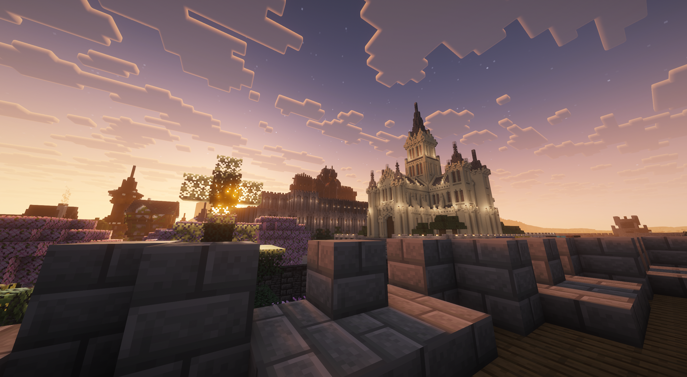

Výchozí bod pro každého nového hráče. Najdete zde bezpečné zázemí, základní obchody a komunitní herní portály. Mimo jiné se zde nachází i warpy pro ostaní MiniHry
📍 /spawn

Survival
Hráčská Megastavba #1
Úchvatná stavba vytvořená naší komunitou. Tento projekt ukazuje kreativitu a vytrvalost hráčů na našem survival serveru.